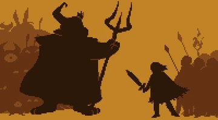

UNDERTALE Timelines
UNDERTALE has different timelines depending on the actions of the player. Although most events stay the same, the are other events that have drastic charges. There are three main routes that the fandom of UNDERTALE have named: the True Pacifist route, the Neutral Route, and the Genocide Route.
The Beginning

19XX
- Long ago, Humans and Monsters lived together in peace
- At some point however, Humans started to get wary of Monsters, fearing their souls are too strong
War

19XX
- War broke out between the two, and the Humans won the war
- The Humans then banished the Monsters, trappung them in Mt. Ebbot for all of eternity
- The Monsters Cannot escape without a very powerful soul, something that they are unable to get
Going to the Underground

201X
- Many years later, a Human child decides to climb Mt. Ebott